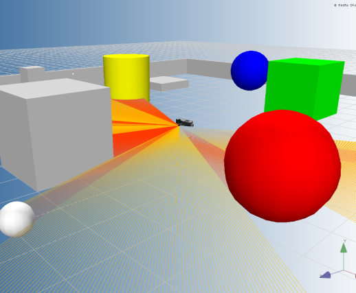

LaserRangeFinder Example
This example illustrates the use of the Laser Range Finder on Robotino. If Robotino is placed in an obstacle cluttered environment then it moves around avoiding the obstacles. The example runs for 60 seconds.
Contents

Description
Robotino can be equipped with a very precise Hokuyo URG-04LX-UG01 laser scanner. In this example we read the distance readings from the laser range finder. Based on the readings from the laser range finder, we can find out if Robotino is approaching an obstacle or not. In case it is, then we stop Robotino and let it rotate until it is clear of obstacles. If no obstacle is detected then we let Robotino move forward with a constant velocity.
Code explanation
First we will need to construct objects that we will be requiring in our program. In this program, we will require objects of Com, OmniDrive, LaserRangeFinder and Bumper. This is done as follows.
ComId = Com_construct; OmniDriveId = OmniDrive_construct; LaserRangeFinderId = LaserRangeFinder_construct; BumperId = Bumper_construct;
Upon successful contruction of the objects, an Id is returned for each object. This Id is used later when communicating with Robotino. Now we need to set the address of Robotino and then connect to it. This is done as follows.
Note the IP address and port number might be different
Com_setAddress(ComId, '127.0.0.1:8081');
Com_connect(ComId);
Once we are connected to Robotino, we need to bind each of the object we created to Robotino using the ComId. This can be done as follows.
OmniDrive_setComId(OmniDriveId, ComId); LaserRangeFinder_setComId(LaserRangeFinderId, ComId); Bumper_setComId(BumperId, ComId);
We create two vectors, ranges and intensities of sizes 1000 each and initialize them with zeors. We then start our "stop watch" to limit the example execution to 60 seconds.
ranges = zeros(1000,1); intensities = zeros(1000,1); tStart = tic;
We initiate a while loop based on the condition that Robotino's bumper hasn't detected a collision. Here we obtain the laser range finder readings and based on a simple comparison decide whether if we are approaching an obstacle or not. In case Robotino is approaching one, using the OmniDrive_setVelocity function we stop the robot and make it rotate. In case there is no obstacle in front of Robotino then using the same OmniDrive_setVelocity function, we let Robotino continue moving forward.
while (Bumper_value(BumperId) ~= 1) tElapsed = toc(tStart); % If 60 seconds are elapsed then exit while loop if(tElapsed >= 60 ) break; end; if (LaserRangeFinder_grab(LaserRangeFinderId) == 1) [ success, seq, stamp, angle_min, angle_max, angle_increment, time_increment, scan_time, range_min, range_max, ranges, numRanges, intensities, numIntensities ] = LaserRangeFinder_getReadings( LaserRangeFinderId ); for i=1:100 % The number of readings we receive are 666 but we need to % consider the readings between 283 - 383 as these lie in front % of Robotino. index = i + 283; if( 0.8 >= ranges(index)) % Obstacle detected ahead. OmniDrive_setVelocity(OmniDriveId, 0, 0 ,100); break; else % No obstacle detected. OmniDrive_setVelocity(OmniDriveId, 500, 0 ,0); end end end end
Once 60 seconds have been elapsed and the while loop is exited. We will need to disconnect from Robotino as follows.
Com_disconnect(ComId);
It is also recommended to destroy all objects that we created for our example. This can be done as follows.
LaserRangeFinder_destroy(LaserRangeFinderId); Bumper_destroy(BumperId); OmniDrive_destroy(OmniDriveId); Com_destroy(ComId);